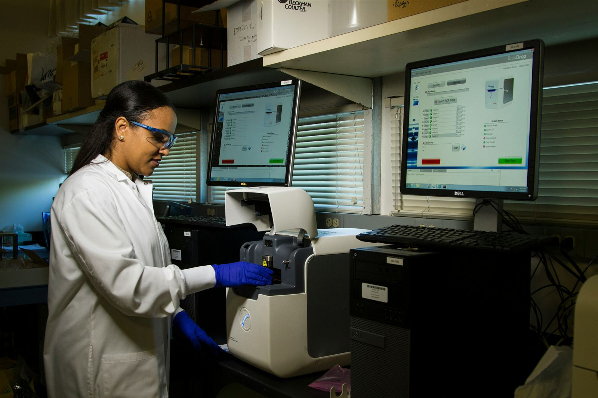
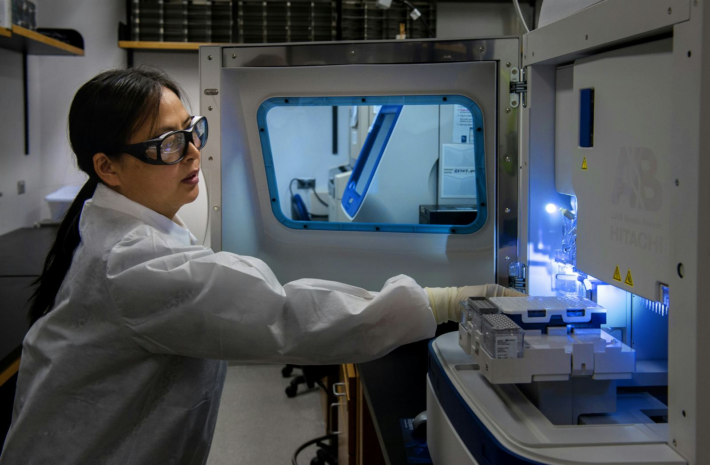

Health & Physiology

We study how the female body uniquely responds to space, focusing on reproductive and
hormonal health, radiation, cardiovascular and musculoskeletal changes, neuroscience,
and microgravity adaptation, all through clinical, literature-based, experimental,
analog, and theoretical research.
For: researchers, clinicians, and students investigating research gaps in how space
affects women’s bodies.
Bioengineering & Innovation

We engineer solutions and technological innovations to ensure women can endure and
thrive in the space environment, through development of wearable health tech,
next-generation spacesuits, and alternatives to menstrual suppression in orbit.
Breakthroughs made for space also have the power to improve women’s lives on Earth.
For: engineers, designers, and biotech minds who want to build technological
solutions that can support women’s health in space.
Policy, Ethics & Society
We tackle the systemic, regulatory, and ethical barriers to women’s participation and
safety in space through policy briefs, legislative projects, governance analysis, and
advocacy, with the goal of utilizing our evidence-based findings to enact change and
inspire a female-focused movement.
For: policy, law, and ethics experts set on giving women’s health the attention and
recognition it deserves in space governance.
Marketing & Communications
We transform Adrastea’s research and advocacy into accessible, compelling content
across our social platforms, website, and public presence to enhance our visibility.
This is a high-intensity science journalism and storytelling initiative, not a generic
social media role, that translates overlooked science into stories that connect with
the general public and attract new, potential partners.
For: science communicators, writers, designers, digital and video creators, and
strategists who can turn our science into something that resonates with distinct
audiences.
Strategy & Operations
We serve as the backbone that keeps our nonprofit running, managing Adrastea’s
priorities, coordination, finance, partnerships, event and conference participation,
and the day-to-day systems that keep each division and team aligned with our mission.
For: organized, high-agency individuals who can implement strategy behind the scenes,
streamline internal procedures, and help grow our reach.